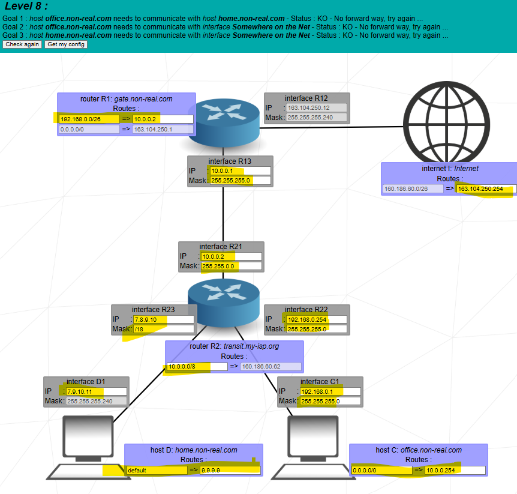
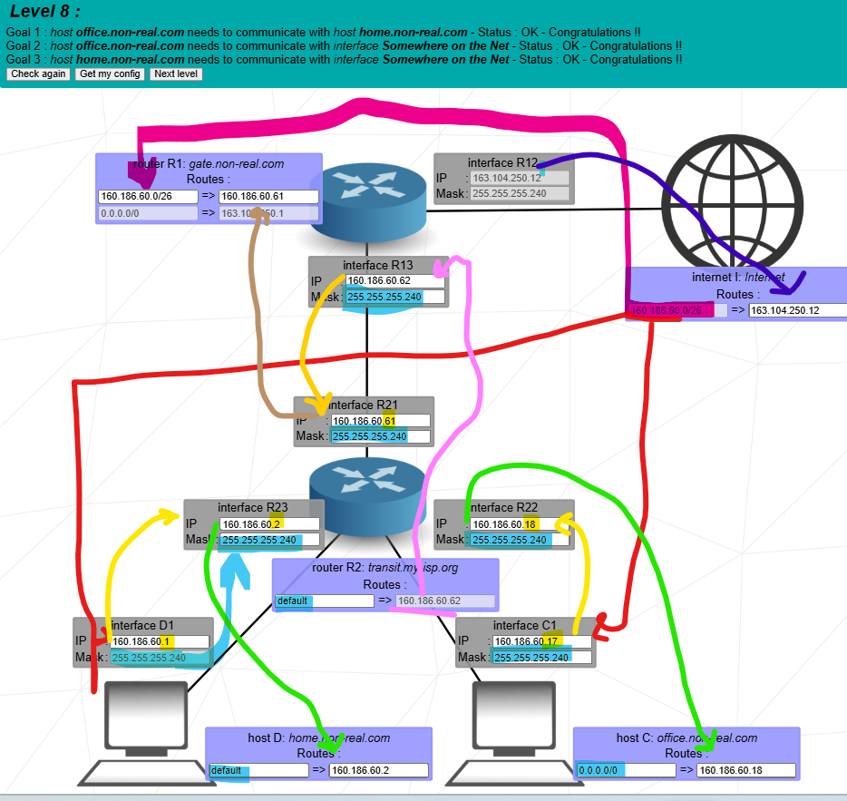

Goal: connect home.non-real.com (host D) and office.non-real.com (host C) behind an ISP router, and give both LANs working Internet access using a summarized public block 160.186.60.0/26.


The Internet knows only one summarized route: 160.186.60.0/26 → R1. Inside this /26 you create smaller subnets for:
Hosts use default routes to their local router. The ISP router R2 uses a default route
to R1. R1 has a specific route for the whole 160.186.60.0/26 block back
to R2 and a default route to the Internet.
Internet only knows the summarized customer block:
So any IP from 160.186.60.0 to 160.186.60.63 is sent to R1.
Inside that range, you carve three /28 subnets.
You pick three different /28 blocks inside the /26: one for home, one for office, and one for the R1–R2 backbone.
160.186.60.1 / 255.255.255.240.160.186.60.2 / 255.255.255.240.Host D and R23 share 160.186.60.0/28, so D uses R23 as default gateway.
160.186.60.17 / 255.255.255.240.160.186.60.18 / 255.255.255.240.Host C and R22 are in 160.186.60.16/28, giving a separate small LAN.
160.186.60.61 / 255.255.255.240.160.186.60.62 / 255.255.255.240.This /28 is the transit link between R1 and R2 inside the larger /26 customer block.
All three /28 networks are subnets of the summarized 160.186.60.0/26, so Internet only needs that one /26 route.
Each host uses a default gateway to reach other networks:
Meaning: “If destination is not in my /28, send to my router.”
R2 has three directly connected networks: home /28, office /28, and backbone /28. For everything else, it sends traffic upstream to R1:
So traffic from C or D going to Internet or to other external networks goes via R13.
R1 connects backbone and Internet. It knows:
The /26 route says “everything in 160.186.60.0–63 is behind R2”. The 0.0.0.0/0 is the classic Internet default.
The Internet doesn’t know the internal /28s. It only knows the summarized /26:
So any reply to 160.186.60.x goes to R1, which then uses its /26 route to forward to R2 and finally to C or D.
R2 routes between the two /28 LANs entirely inside the 160.186.60.0/26 block.
Notice: Internet always uses the single /26 route to get back to R1. From there, R1 and R2 know how to reach each /28 inside.
“In Level 8 the Internet only knows one summarized route: 160.186.60.0/26 → R1. Inside this /26 I split the block into three /28s: 160.186.60.0/28 for the home LAN (D and R23), 160.186.60.16/28 for the office LAN (C and R22), and 160.186.60.48/28 for the backbone link between R1 and R2 (R13 and R21).
Each host has a default route to its local router: D to 160.186.60.2, C to 160.186.60.18. R2 has a default route to R1 via 160.186.60.62, and R1 has a specific route 160.186.60.0/26 via 160.186.60.61 back to R2 plus a 0.0.0.0/0 default route to the Internet. When C or D sends to the Internet, traffic goes host → local router → R2 → R1 → Internet. Replies come back using the summarized /26 route to R1, then R1 uses the same /26 route to forward to R2, which finally delivers to the correct /28 subnet. The same routing also lets C and D talk to each other through R2.”